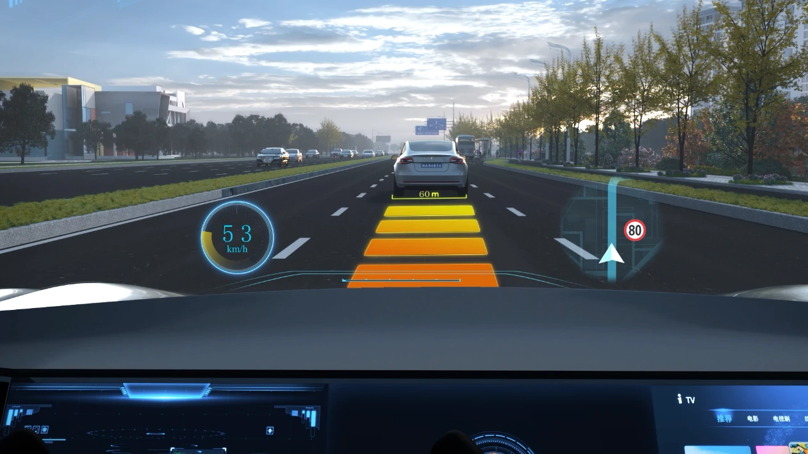

VT-Cockpit® / 智能座艙
抬頭顯示
產品概覽
HUD 將車速、導航和輔助駕駛提示等關鍵資訊投射到駕駛員前方視野，減少視線轉移，讓重要資訊更直觀地呈現。

Capabilities
在駕駛員前方顯示車速、導航與輔助提示等重要資訊。
讓駕駛者更少低頭查看資訊，專注前方道路。
可根據車型人機佈局、顯示內容和光學方案進行定製。
產品詳情
VT-HUD 將車速、導航和輔助駕駛提示等關鍵信息投射到駕駛員前方視野，讓駕駛者無需頻繁低頭即可獲取道路與車輛狀態。
產品可結合車型人機佈局、顯示內容與光學方案進行項目化設計，並與座艙域控制器、導航及輔助駕駛系統協同呈現分層信息。
在駕駛員前方顯示車速、導航與輔助提示。
降低低頭查看儀表的頻次，幫助駕駛者保持前方注意力。
按優先級組織導航、警示與車輛狀態信息。
結合光學結構、顯示區域和整車人機佈局定制。
Applications
將車速、導航和車輛狀態資訊融入座艙顯示體系，減少駕駛者視線在道路、儀表和中控屏之間頻繁切換。
可按優先級呈現輔助駕駛狀態、預警和導航提示，幫助駕駛者在向前觀察時理解系統狀態。
圍繞儀表台空間、駕駛員視域、顯示內容和光學方案進行定制，適配不同車型座艙平台。
Related Products
產品功能與配置可根據車型及專案需求定製，具體方案以專案評估為準。